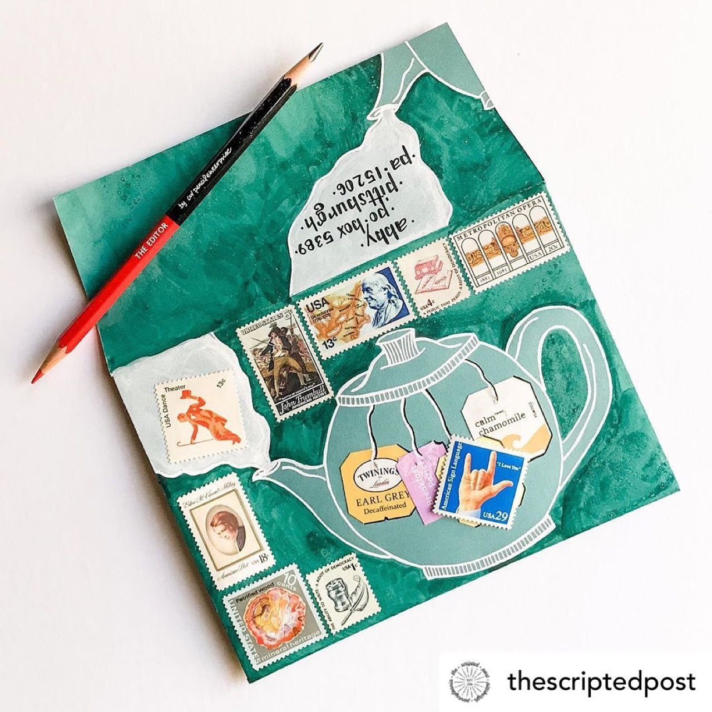

Macro nature photography employs magnification techniques to document insects, arachnids, and other small organisms, revealing extraordinary structural complexity and aesthetic beauty. Nature macro photographers combine technical mastery with patience and genuine interest in small creatures, creating images that inspire wonder and environmental consciousness. The combination of scientific documentation and artistic vision in macro nature photography permits communication of ecological knowledge alongside aesthetic celebration of natural complexity. Contemporary macro nature photography increasingly serves conservation purposes, documenting biodiversity and raising awareness of environmental threats facing small creature populations.
Now is a Great Time to Improve Your Handwriting

Previous articleBirgitt Olislagers Captures the Fleeting Beauty In Nature
Next articleLindsay Buck Catalogues Wildflower Specimens